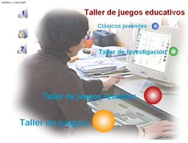
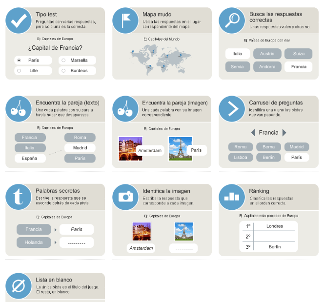

Fase inicial. En casa.
En lo que concierne al presente apartado de este módulo cuatro, nos vamos a centrar en descubrir aquellas herramientas que nos van a permitir confeccionar y elaborar las distintas actividades interactivas sobre las que los alumnos van a trabajar en sus casas una vez que hayan visualizado un vídeos, escuchado una canción etc.
Primera parte
En un principio os voy a presentar una herramienta tecnológica que os va a permitir aprovechar fichas, materiales y cuadernos tradicionales, vuestros o de otros docentes, para convertirlos en fichas y cuadernos interactivos, los cuales pueden ser trabajadas online por el alumnado por medio de una contraseña de acceso, obteniendo feedback al instante.
Liveworksheets
Sin más, os presento a Liveworksheets, creada por Víctor Gayol.
Si clicas en el siguiente enlace accedes a un Guía de Inicio para confeccionar tu propio material y ejemplos de aplicación en distintas fichas ya confeccionadas a modo de demostración.
Seguidamente, se presentan las distintas opciones a la hora de confeccionar tus fichas interactivas: unir con flechas, arrastrar y soltar, ejercicios de habla y escucha, añadir vídeo de youtube, enlaces, archivos mp3 y otras muchas más.
Es muy sencillo si quieres introducir en tu ficha un vídeo con sólo dibujar un cuadro de texto y copiar en su interior la URL del vídeo.
O por ejemplo, un audio de mp3 (sólo funciona en Google Crome). Debes escribir "speak:" seguido por la respuesta correspondientes. Seguidamente requerirá el idioma. En el caso de que hubiera como posibles más de una respuesta, debes separarlas mediante el uso de las barras.
A continuación os traigo a colación un ejemplo del resultado obtenido al convertir una ficha tradicional en una interactiva para trabajar las distintas categorías gramaticales que pueden desempeñar las distintas funciones sintácticas. Así, tras una breve explicación, establece un ejercicio de unir mediante flechas y de clasificar. O también otra ficha que trabaja las formas verbales a partir de respuestas de opción múltiple. ¡COMPROBADLO POR VOSOTROS MISMOS! Ficha 1 Ficha 2
Una cosita más, una vez acaba la ficha, se ofrecen dos opciones:
De la misma manera, tenéis la posibilidad de:
Active Textbook
Por otro lado os proporciono la herramienta online Active Textbook, gracias a la cual seréis a capaces de transformar cualquier libro en formato pdf en un libro digital interactivo el cual podrá ser consultado de modo online a partir de cualquier dispositivo móvil, navegador.
Son múltiples las posibilidades que nos ofrece en nuevo libro interactivo creado para trabajar en él: subrayar, incrustar imágenes, fotografías, grabaciones de vídeo y audio, enlaces web. test y cuestionarios de evaluación etc.
Segunda parte
En estos momentos, vamos a aproximarnos a aquellas herramientas que nos van a permitir crear ejercicios didácticos online que nos permitan compaginar el aprendizaje del alumnado dentro y fuera del aula.
kubbu CATEDU NO RECOMIENDA SU USO DE MOMENTO, PUES HACE USO DE FLASH
Por medio de esta herramienta gratuita, intuitiva y sencilla, podréis crear juegos didácticos (máximo 15) como crucigramas, dominó, adivinanzas, en otros, los cuales deben ser resueltos, como máximo, por 30 alumnos de forma online.
Para poder empezar usar Kubbu, primero, os tendréis que dar de alta como profesores y, luego, crear cuentas de estudiantes o de grupos y proporcionarles los datos de acceso. Estas actividades interactivas, pueden imprimirse, difundirlas vía e-mail o guardarlos en línea.
En los siguientes enlaces, podéis consultar distintos tipos de actividades interactivas sobre sintaxis (complementos) elaboradas mediante la herramienta Kubbu:
- Cuestionario con una sola respuesta correcta
- Cuestionario con varias opciones correctas
- Arrastrar las opciones correctas
Taller de juegos educativos 2.0 CATEDU NO RECOMIENDA SU USO DE MOMENTO, PUES HACE USO DE FLASH
Esta herramienta producto del trabajo y esfuerzo de profesores como José Carlos Galán Pardo, José Antonio Garabatos Cuadrado y Jorge Pedrosa Rúa os va a permitir elaborar juegos educativos que les permitan repasar a vuestro alumnado sobre los contenidos didácticos a través del juego.

Para ello, podréis seleccionar diversas opciones:
- Distintos juegos con las mismas preguntas.
- Un mismo juegos con preguntas aleatorias.
- Agrupación de juegos a modo de "juegos reunidos".
En los siguientes enlaces os proporciono EJEMPLOS de juegos interactivos sobre los COMPLEMENTOS VERBALES creados a partir del TALLER DE JUEGOS CREATIVOS.
Para poder visualizar el juego, tenéis que seleccionar primero el número de jugadores.
Os proporciono el enlace para que podáis indagar sobre cómo confeccionar vuestras propias actividades interactivas en el apartado de "Taller de Juegos".
Una de las formas más efectivas para aprender contenidos didácticos es utilizar el juego como estrategia pedagógica.
Cerebrite es un portal de juegos confeccionados por los propios usuarios sobre muy diversas temáticas y materias intentando satisfacer aquel que busque un juego educativo susceptible de aplicación en su área.
Para los docentes, existe Cerebriti Edu. Para poder acceder a él se establece establece un precio a los centros educativos de 25 euros por curso, siendo gratis para los alumnos durante los meses de verano y que así pueda repasar todo lo visto durante el curso. Una vez que el centro se haya dado de alta, todo el profesorado tiene acceso gratuito.
Este portal nos ofrece varias opciones:
- Si queremos buscar un juego ya editado, seleccionamos la pestaña de LENGUA y buscamos entre el repositorio el juego que más se adapte a nuestros intereses. En este caso los COMPLEMENTOS DEL VERBO.
Así, encontramos los siguientes juegos educativos sobre los complementos verbales.
Para poder guardar los puntos, el jugador debe de haberse registrado con anterioridad en Cerebriti.
- Si queremos CREAR nuestro propio juego seleccionaremos la opción de crear juego.
Así, la elaboración del juego sigue una serie de fases:
Lo primero que tenéis que hacer es seleccionar el tipo de juego que queréis elaborar y ya luego pasar a confeccionarlo.
